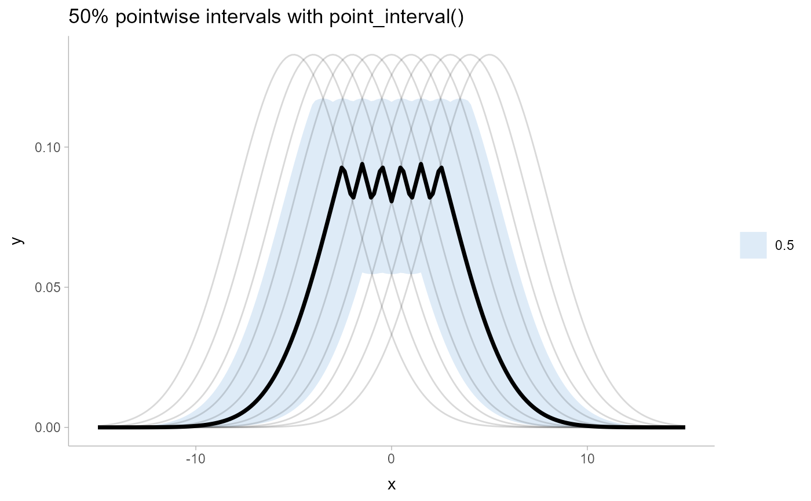
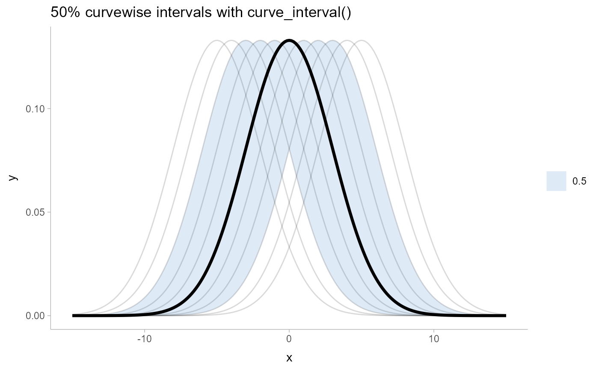

R/curve_interval.R
curve_interval.RdTranslates draws from distributions in a grouped data frame into a set of point and interval summaries using a curve boxplot-inspired approach.
curve_interval(
.data,
...,
.along = NULL,
.width = 0.5,
na.rm = FALSE,
.interval = c("mhd", "mbd", "bd", "bd-mbd")
)
# S3 method for matrix
curve_interval(
.data,
...,
.along = NULL,
.width = 0.5,
na.rm = FALSE,
.interval = c("mhd", "mbd", "bd", "bd-mbd")
)
# S3 method for rvar
curve_interval(
.data,
...,
.along = NULL,
.width = 0.5,
na.rm = FALSE,
.interval = c("mhd", "mbd", "bd", "bd-mbd")
)
# S3 method for data.frame
curve_interval(
.data,
...,
.along = NULL,
.width = 0.5,
na.rm = FALSE,
.interval = c("mhd", "mbd", "bd", "bd-mbd"),
.simple_names = TRUE,
.exclude = c(".chain", ".iteration", ".draw", ".row")
)One of:
A data frame (or grouped data frame as returned by group_by())
that contains draws to summarize.
A posterior::rvar vector.
A matrix; in which case the first dimension should be draws and the second dimension values of the curve.
Bare column names or expressions that, when evaluated in the context of
.data, represent draws to summarize. If this is empty, then by default all
columns that are not group columns and which are not in .exclude (by default
".chain", ".iteration", ".draw", and ".row") will be summarized.
This can be numeric columns, list columns containing numeric vectors, or
posterior::rvar()s.
Which columns are the input values to the function describing the curve (e.g., the "x"
values). Supports tidyselect syntax, as in dplyr::select(). Intervals are calculated jointly with
respect to these variables, conditional on all other grouping variables in the data frame. The default
(NULL) causes curve_interval() to use all grouping variables in the input data frame as the value
for .along, which will generate the most conservative intervals. However, if you want to calculate
intervals for some function y = f(x) conditional on some other variable(s) (say, conditional on a
factor g), you would group by g, then use .along = x to calculate intervals jointly over x
conditional on g. To avoid selecting any variables as input values to the function describing the
curve, use character(); this will produce conditional intervals only (the result in this case should
be very similar to median_qi()). Currently only supported when .data is a data frame.
vector of probabilities to use that determine the widths of the resulting intervals.
If multiple probabilities are provided, multiple rows per group are generated, each with
a different probability interval (and value of the corresponding .width column).
logical value indicating whether NA values should be stripped before the computation proceeds.
If FALSE (the default), the presence of NA values in the columns to be summarized will generally
result in an error. If TRUE, NA values will be removed in the calculation of intervals so long
as .interval is "mhd"; other methods do not currently support na.rm. Be cautious in applying
this parameter: in general, it is unclear what a joint interval should be when any of the values
are missing!
The method used to calculate the intervals. Currently, all methods rank the curves
using some measure of data depth, then create envelopes containing the .width% "deepest" curves.
Available methods are:
"mhd": mean halfspace depth (Fraiman and Muniz 2001).
"mbd": modified band depth (Sun and Genton 2011): calls fda::fbplot() with method = "MBD".
"bd": band depth (Sun and Genton 2011): calls fda::fbplot() with method = "BD2".
"bd-mbd": band depth, breaking ties with modified band depth (Sun and Genton 2011): calls
fda::fbplot() with method = "Both".
When TRUE and only a single column / vector is to be summarized, use the
name .lower for the lower end of the interval and .upper for the
upper end. When FALSE and .data is a data frame,
names the lower and upper intervals for each column x x.lower and x.upper.
A character vector of names of columns to be excluded from summarization if no column names are specified to be summarized. Default ignores several meta-data column names used in ggdist and tidybayes.
A data frame containing point summaries and intervals, with at least one column corresponding
to the point summary, one to the lower end of the interval, one to the upper end of the interval, the
width of the interval (.width), the type of point summary (.point), and the type of interval (.interval).
Intervals are calculated by ranking the curves using some measure of data depth, then
using binary search to find a cutoff k such that an envelope containing the k% "deepest"
curves also contains .width% of the curves, for each value of .width (note that k
and .width are not necessarily the same). This is in contrast to most functional boxplot
or curve boxplot approaches, which tend to simply take the .width% deepest curves, and
are generally quite conservative (i.e. they may contain more than .width% of the curves).
See Mirzargar et al. (2014) or Juul et al. (2020) for an accessible introduction to data depth and curve boxplots / functional boxplots.
Fraiman, Ricardo and Graciela Muniz. (2001). "Trimmed means for functional data". Test 10: 419–440. doi:10.1007/BF02595706 .
Sun, Ying and Marc G. Genton. (2011). "Functional Boxplots". Journal of Computational and Graphical Statistics, 20(2): 316-334. doi:10.1198/jcgs.2011.09224
Mirzargar, Mahsa, Ross T Whitaker, and Robert M Kirby. (2014). "Curve Boxplot: Generalization of Boxplot for Ensembles of Curves". IEEE Transactions on Visualization and Computer Graphics. 20(12): 2654-2663. doi:10.1109/TVCG.2014.2346455
Juul Jonas, Kaare Græsbøll, Lasse Engbo Christiansen, and Sune Lehmann. (2020). "Fixed-time descriptive statistics underestimate extremes of epidemic curve ensembles". arXiv e-print. arXiv:2007.05035
point_interval() for pointwise intervals. See vignette("lineribbon") for more examples
and discussion of the differences between pointwise and curvewise intervals.
library(dplyr)
library(ggplot2)
# generate a set of curves
k = 11 # number of curves
n = 201
df = tibble(
.draw = rep(1:k, n),
mean = rep(seq(-5,5, length.out = k), n),
x = rep(seq(-15,15,length.out = n), each = k),
y = dnorm(x, mean, 3)
)
# see pointwise intervals...
df %>%
group_by(x) %>%
median_qi(y, .width = c(.5)) %>%
ggplot(aes(x = x, y = y)) +
geom_lineribbon(aes(ymin = .lower, ymax = .upper)) +
geom_line(aes(group = .draw), alpha=0.15, data = df) +
scale_fill_brewer() +
ggtitle("50% pointwise intervals with point_interval()") +
theme_ggdist()

# ... compare them to curvewise intervals
df %>%
group_by(x) %>%
curve_interval(y, .width = c(.5)) %>%
ggplot(aes(x = x, y = y)) +
geom_lineribbon(aes(ymin = .lower, ymax = .upper)) +
geom_line(aes(group = .draw), alpha=0.15, data = df) +
scale_fill_brewer() +
ggtitle("50% curvewise intervals with curve_interval()") +
theme_ggdist()
